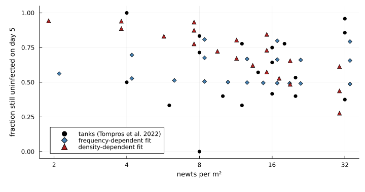
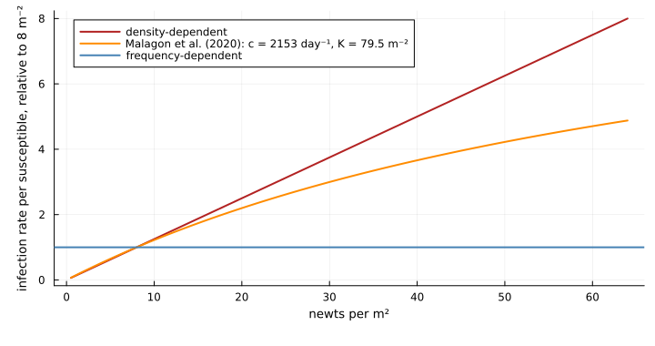
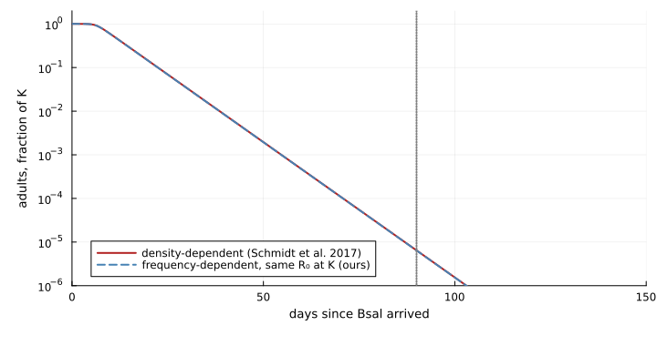
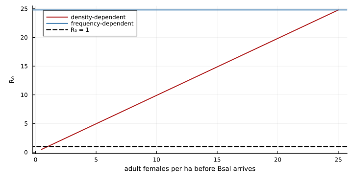
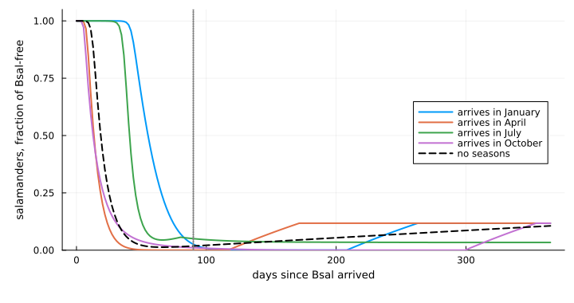
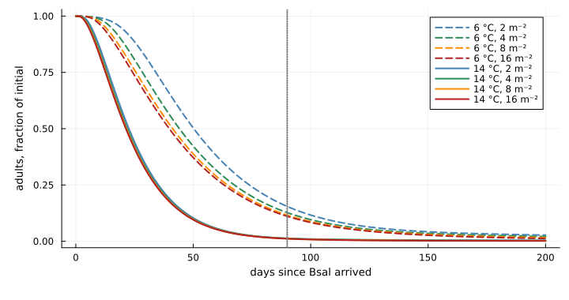
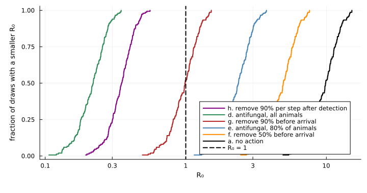
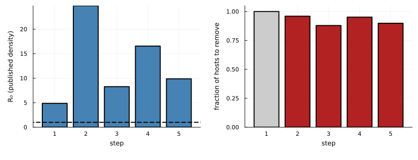

Can a Bsal outbreak be stopped?
- The question and the method
- Step 1. Transmission and host density
- Step 2. Births, deaths and a latent period
- Step 3. Seasons
- Step 4. Life stages, habitats and temperature
- Step 5. Load on each animal, expert uncertainty and management
- All steps
- What the exercise shows
- Limits
- References
[!NOTE]
Models in this tutorial
Model Source Category API page S–L–I model, SchmidtSLIProblemSchmidt et al. 2017 published api/schmidt2017.mdTransmission functions, TransmissionSLIProblem,TomprosModelMalagon et al. 2020; Tompros et al. 2022 published api/bsal_transmission.mdSeasonal model and Floquet R₀, SeasonalBsalProblemBozzuto & Canessa 2019 published api/bozzuto2019.mdStages and temperature, BsalStageTemperatureProblemChowdhury et al. 2025 published api/chowdhury2025.mdLoad IPM and management, canessa_ensemble,CanessaSIParametersCanessa et al. 2018 published api/canessa2018.mdCategories: published models reimplement a paper’s equations and are checked against it; modified models add structure to a published model; new models are new structure. Results from modified and new models are not published results.
The question and the method
Batrachochytrium salamandrivorans (Bsal) has wiped out fire salamander (Salamandra salamandra) populations in the Netherlands, Belgium and Germany, and threatens North American newts and salamanders if it arrives there. The management question every model of it asks is whether an outbreak can be stopped, usually by reducing the number of hosts, and how fast it destroys a population if it is not.
The answer depends on how much biology is in the model. This vignette climbs a ladder of five published models. Each adds one piece of biology to the one before, and at every step it reports the same three outcomes:
- R₀, the number of animals one infected animal infects in a healthy population, at the host density of the published model;
- hosts to remove: the fraction of hosts that must be removed before Bsal arrives to bring R₀ below 1, or “none” if no reduction of density is enough;
- hosts left after 90 days: the host population 90 days after Bsal arrives, as a fraction of the population without Bsal.
| Step | Model | Host | Piece of biology added |
|---|---|---|---|
| 1 | Tompros et al. (2022), Malagon et al. (2020) | eastern newt, in tanks | how transmission depends on host density |
| 2 | Schmidt et al. (2017) | fire salamander | births, deaths and a latent period |
| 3 | Bozzuto & Canessa (2019) | fire salamander | seasons |
| 4 | Chowdhury et al. (2025) | eastern newt | life stages in water and on land, zoospore pools, temperature |
| 5 | Canessa et al. (2018) | fire salamander | Bsal load on each animal; uncertainty from experts; management |
[!IMPORTANT]
The models are reference implementations of the published models, with parameter values read from the package’s compendium. Published values quoted for comparison come from the package’s validation registry, with their status (reproduced, qualitative or discrepant). Each model has its own host, parameter set and units, so a change in an outcome between steps mixes the new biology with the new parameters. Where a step switches the new piece off within one model, that comparison is like for like. Swapping one model’s transmission function into another model (step 2) and outcomes such as hosts left after 90 days, where the paper does not report them, are our calculations, not published results.
using Chytridiomycosis, Plots, Printf
default(linewidth = 2, size = (720, 380), legendfontsize = 8, guidefontsize = 9,
titlefontsize = 10, left_margin = 4Plots.mm, bottom_margin = 4Plots.mm)
# One row per step, filled in as we go; NaN where an outcome is not defined.
ladder = NamedTuple[]
function step!(n, model, R0, removal, left, note)
push!(ladder, (; n, model, R0, removal, left, note))
return (R0 = round(R0, digits = 2), remove = round(removal, digits = 3), left = round(left, digits = 3))
end
# A published value from the validation registry and its status.
function registry(id)
t = validation_target(id)
return (; published = t.published, status = t.status,
ours = t.regression === nothing ? nothing : t.regression["value"])
end
nothingPrecompiling packages...
4917.5 ms ✓ Chytridiomycosis
1 dependency successfully precompiled in 5 seconds. 161 already precompiled.Step 1. Transmission and host density
The first question is how the rate of new infections depends on the number of hosts. Two classical forms bracket the possibilities (S susceptible, I infectious, N hosts):
- density-dependent, $\phi = \beta S I$: each animal meets more others when they are crowded, so R₀ grows with density, and thinning the population below a threshold stops Bsal;
- frequency-dependent, $\phi = \beta S I/N$: each animal makes the same number of contacts whatever the density, so R₀ does not depend on density, and no amount of thinning stops Bsal.
Tompros et al. (2022) followed Bsal epidemics in twenty 1-m² tanks holding 2 to 32 adult eastern newts (Notophthalmus viridescens) and fitted eight transmission functions to the first five days. Frequency dependence fitted best. Refitting the two classical forms to the authors’ deposited counts (time in days, densities in newts per m²):
fd = maximum_likelihood(TomprosModel(:frequency); starts = 2)
dd = maximum_likelihood(TomprosModel(:density); starts = 2)
tp = TomprosParameters(:tompros2022)
@printf("frequency-dependent: β = %.3f day⁻¹, AIC %.1f (paper: β = %.3f, AIC 128.3; %s)\n",
fd.estimates.β, fd.aic, registry("tompros2022_beta").published, registry("tompros2022_beta").status)
@printf("density-dependent: β = %.4f newt⁻¹ m² day⁻¹, AIC %.1f (paper: %s)\n",
dd.estimates.β, dd.aic, registry("tompros2022_density_dependent").published)frequency-dependent: β = 0.230 day⁻¹, AIC 128.3 (paper: β = 0.230, AIC 128.3; reproduced)
density-dependent: β = 0.0117 newt⁻¹ m² day⁻¹, AIC 156.8 (paper: FTC)The paper reports that the density-dependent fit failed to converge (“FTC”). Here it converges, 28.5 AIC units worse than frequency dependence, which supports the paper’s conclusion (tompros2022_density_dependent, qualitative).
tanks = load_tompros2022()
Ns = [t.S[1] + t.I[1] for t in tanks]
obs = [t.S[end] / t.S[1] for t in tanks]
pf = [expected_susceptibles(FrequencyDependent(fd.estimates.β), t.S[1], t.I[1], 5.0) / t.S[1] for t in tanks]
pd = [expected_susceptibles(DensityDependent(dd.estimates.β), t.S[1], t.I[1], 5.0) / t.S[1] for t in tanks]
scatter(Ns, obs; xscale = :log2, xticks = ([2, 4, 8, 16, 32], ["2", "4", "8", "16", "32"]),
color = :black, label = "tanks (Tompros et al. 2022)", xlabel = "newts per m²",
ylabel = "fraction still uninfected on day 5", ylim = (-0.05, 1.05), legend = :bottomleft)
scatter!(Ns .* 1.05, pf; color = :steelblue, marker = :diamond, label = "frequency-dependent fit")
scatter!(Ns .* 0.95, pd; color = :firebrick, marker = :utriangle, label = "density-dependent fit")
Tanks start with different proportions infected, so the points scatter. The density-dependent fit predicts too little infection in the sparse tanks and too much in the crowded ones.
With R₀ = β/(μ + σ), using Malagon et al.’s Bsal death rate μ and a recovery rate σ = 1/40 day⁻¹, Tompros et al. give R₀ = 4.9 at any density:
R0_1 = basic_reproduction_number(tp)
r = registry("tompros2022_R0")
@printf("R₀ = %.2f / (%.4f + %.3f) = %.2f (paper: %g; %s)\n", tp.β, tp.μ, tp.σ, R0_1, r.published, r.status)R₀ = 0.23 / (0.0223 + 0.025) = 4.86 (paper: 4.9; reproduced)Malagon et al. (2020) filmed contacts between newts at 2, 4 and 8 per m² and found that the contact rate per newt saturates, $c N/(K + N)$ (Holling type II), with half-saturation $K \approx 80$ newts per m² without plants. Between the two classical forms:
mp = MalagonParameters(:malagon2020)
hc = HollingContact(mp)
N = 0.5:0.5:64
rel(f) = f ./ f[findfirst(==(8.0), N)]
plot(N, rel(N); label = "density-dependent", color = :firebrick, xlabel = "newts per m²",
ylabel = "infection rate per susceptible, relative to 8 m⁻²", legend = :topleft)
plot!(N, rel(transmission_coefficient.(Ref(hc), N)); label = @sprintf("Malagon et al. (2020): c = %.0f day⁻¹, K = %.1f m⁻²", mp.c, mp.K),
color = :darkorange)
hline!([1.0]; label = "frequency-dependent", color = :steelblue)
At the densities of the experiments (2–32 per m²), the Malagon contact curve is nearly linear, so contacts alone suggest density dependence, while the epidemics of Tompros et al. suggest frequency dependence. Contacts are not all equal: an infected newt may make fewer contacts, or contacts in crowded tanks may be shorter. Malagon et al.’s own R₀ is a final-size R₀ of their 10-minute cohabitation trials, not of an epidemic:
for id in ("malagon2020_R0_complex", "malagon2020_R0_simple")
r = registry(id)
v = check_target(validation_target(id)).value
@printf("- `%s`: paper %g, ours %.2f (%s).\n", id, r.published, v, r.status)
endmalagon2020_R0_complex: paper 1.9, ours 1.88 (reproduced).malagon2020_R0_simple: paper 3.2, ours 4.50 (discrepant).
The paper’s 3.2 for tanks without plants comes from the curve’s value at about one month (0.95); its asymptote (0.988) gives 4.5.
step!(1, "transmission alone (Tompros 2022)", R0_1, NaN, NaN,
"frequency dependence: no density threshold; no demography to follow")(R0 = 4.86, remove = NaN, left = NaN)Step 2. Births, deaths and a latent period
Schmidt et al. (2017) put mass-action (density-dependent) transmission into a model of a fire salamander population: susceptible, latent and infectious adult females per hectare, time in years, with density-dependent mortality that holds the population at its carrying capacity $K$ without Bsal:
\[\begin{aligned} \frac{dS}{dt} &= bS - (d + \gamma N)S - \beta S I, \\ \frac{dL}{dt} &= \beta S I - (d + e + \gamma N)L, \\ \frac{dI}{dt} &= eL - (d + d_I + \gamma N)I, \qquad \gamma = (b - d)/K . \end{aligned}\]
Bsal invades when $K$ exceeds $K_{\text{threshold}} = (b + e)(b + d_I)/(\beta e)$, so $R_0 = K/K_{\text{threshold}}$ and the fraction of hosts to remove is $1 - K_{\text{threshold}}/K$.
p = SchmidtParameters(:schmidt2017)
R0_2 = basic_reproduction_number(p)
@printf("K = %g females ha⁻¹; β = %g ha yr⁻¹; latent period %.1f days; infectious period %.1f days\n",
p.K, p.β, 365 / p.e, 365 / (p.d + p.d_I))
for (id, v) in (("schmidt2017_K_threshold", invasion_threshold(p)), ("schmidt2017_removal", 100removal_fraction(p)))
r = registry(id)
@printf("%s: ours %.4f, paper %g (%s)\n", id, v, r.published, r.status)
end
crash = population_crash(p)
@printf("R₀ = %.1f; population minimum %.1e of K after %.0f days (paper: \"%s\" after \"%s\")\n",
R0_2, crash.Smin / p.K, 365crash.tmin, registry("schmidt2017_crash_depth").published,
registry("schmidt2017_crash_time").published)K = 25 females ha⁻¹; β = 52 ha yr⁻¹; latent period 1.0 days; infectious period 7.0 days
schmidt2017_K_threshold: ours 1.0086, paper 1.0086 (reproduced)
schmidt2017_removal: ours 95.9657, paper 96 (reproduced)
R₀ = 24.8; population minimum 1.7e-11 of K after 66 days (paper: "almost zero" after "two to three months")The paper’s endemic equilibrium and its Hopf bifurcation are not reproduced:
for id in ("schmidt2017_S_eq", "schmidt2017_hopf")
t = validation_target(id)
@printf("- `%s`: %s. Paper %g, ours %.4g (%s).\n", id, t.quantity, t.published, check_target(t).value, t.status)
endschmidt2017_S_eq: endemic equilibrium S_eq (adult females ha⁻¹). Paper 1.0027, ours 1.003 (discrepant).schmidt2017_hopf: carrying capacity K_H at the Hopf bifurcation (adult females ha⁻¹). Paper 9.5, ours 10.21 (discrepant).
The paper’s $S_{eq}$ equals the large-$K$ approximation of its own eq. (2.3), so the authors probably reported the approximation. No parameter value or model variant tried gives $K_H \approx 9.5$; the equilibrium is barely stable just below 10.21.
Swapping in frequency dependence
Step 1 suggested frequency dependence for newts. The same model with $\beta S I/N$ in place of $\beta S I$ (TransmissionSLIProblem), with the frequency-dependent rate chosen as $\beta K$ so that R₀ at carrying capacity is unchanged (our choice: the newt estimates are in other units and are not transferred):
fdS = FrequencyDependent(p.β * p.K)
ts = 0:0.002:1.0
total(sol) = [max(sum(u), 0.0) for u in sol.u]
ddsol = solve(SchmidtSLIProblem(p; tspan = (0.0, 1.0)); saveat = ts, abstol = 1e-10, reltol = 1e-8)
fdsol = solve(TransmissionSLIProblem(p, fdS; tspan = (0.0, 1.0)); saveat = ts, abstol = 1e-10, reltol = 1e-8)
plot(365 .* ts, total(ddsol) ./ p.K; label = "density-dependent (Schmidt et al. 2017)", yscale = :log10,
ylim = (1e-6, 2), xlabel = "days since Bsal arrived", ylabel = "adults, fraction of K",
legend = :bottomleft, color = :firebrick)
plot!(365 .* ts, max.(total(fdsol) ./ p.K, 1e-12); label = "frequency-dependent, same R₀ at K (ours)",
color = :steelblue, linestyle = :dash, xlims = (0, 150))
vline!([90]; color = :gray, linestyle = :dot, label = "")
# R₀ as the population is thinned before Bsal arrives; for frequency dependence R₀ does not change
Kf = range(0.5, p.K; length = 100)
plot(Kf, [basic_reproduction_number(Chytridiomycosis.with(p; K = k)) for k in Kf];
label = "density-dependent", color = :firebrick, xlabel = "adult females per ha before Bsal arrives",
ylabel = "R₀", legend = :topleft)
hline!([R0_2]; label = "frequency-dependent", color = :steelblue)
hline!([1.0]; color = :black, linestyle = :dash, label = "R₀ = 1")
The two forms give nearly the same crash, because at carrying capacity they are the same. They differ in what management can do: with density dependence, removing 96% of the salamanders before Bsal arrives prevents invasion; with frequency dependence, nothing short of removing all of them does.
left90(sol) = total(sol)[findfirst(t -> t >= 0.25 - 1e-9, ts)] / p.K
@printf("hosts left after 90 days: %.2e (density-dependent), %.2e (frequency-dependent)\n",
left90(ddsol), left90(fdsol))
step!(2, "+ demography, latent period (Schmidt 2017)", R0_2, removal_fraction(p), left90(ddsol),
"density threshold: remove 96%; the population crashes within weeks")hosts left after 90 days: 5.39e-06 (density-dependent), 5.37e-06 (frequency-dependent)
(R0 = 24.79, remove = 0.96, left = 0.0)Step 3. Seasons
Fire salamanders are active in spring and autumn and hide in winter (and, in southern Europe, in summer); larvae are born in late summer; Bsal kills faster in warm weather. Bozzuto & Canessa (2019) made every rate of an S–I version of the model seasonal (time in years from 1 January, densities per hectare):
\[\frac{dS}{dt} = v(t) - dS - c(t)p\,SI, \qquad \frac{dI}{dt} = c(t)p\,SI - (\delta(t) + d)I,\]
with a two-peaked contact rate $c(t)$, larval inflow $v(t)$ from late July to late September, and Bsal mortality $\delta(t)$. Their R₀ for a seasonal model is a Floquet R₀, the average growth of the infected class over a year turned into a ratio. The target proportion $1/R_0^F$ is the density, relative to normal, below which Bsal cannot invade.
b = BozzutoParameters(:bozzuto2019) # hibernating population, north-western Europe
R0F = floquet_reproduction_number(b)
R0ns = basic_reproduction_number(b)
R0num = floquet_reproduction_number(b; method = :numerical)
for (id, v) in (("bozzuto2019_R0_hibernation", R0ns), ("bozzuto2019_floquet_R0_hibernation", R0F),
("bozzuto2019_numerical_hibernation", R0num), ("bozzuto2019_target_hibernation", target_proportion(b)))
r = registry(id)
@printf("%-36s ours %.3f, paper %g (%s)\n", id, v, r.published, r.status)
endbozzuto2019_R0_hibernation ours 8.880, paper 8.88 (reproduced)
bozzuto2019_floquet_R0_hibernation ours 8.272, paper 8.27 (reproduced)
bozzuto2019_numerical_hibernation ours 8.328, paper 8.33 (reproduced)
bozzuto2019_target_hibernation ours 0.121, paper 0.12 (reproduced)For the aestivating population of north-eastern Spain every value in the package is 1.3–1.7% below the paper’s:
for id in ("bozzuto2019_R0_aestivation", "bozzuto2019_floquet_R0_aestivation")
t = validation_target(id)
@printf("- `%s`: paper %g, ours %.3f (%s).\n", id, t.published, check_target(t).value, t.status)
endbozzuto2019_R0_aestivation: paper 2.13, ours 2.095 (discrepant).bozzuto2019_floquet_R0_aestivation: paper 1.92, ours 1.888 (discrepant).
The seasonal ratios agree with the paper (Floquet R₀/R₀ = 0.901 in both). The paper’s numbers are reproduced exactly by a winter infective period of 28.7 days instead of the documented 26, and nothing in the paper gives 28.7.
Seasonality lowers R₀ by about 7%, mostly because $c_0$ is the midpoint of the contact rate’s range, not its mean. Its larger effect is on timing. The outcome depends on when Bsal arrives:
arrive = (0.0, 0.25, 0.5, 0.75) # 1 January, 1 April, 1 July, 1 October
months = ("January", "April", "July", "October")
plt = plot(xlabel = "days since Bsal arrived", ylabel = "salamanders, fraction of Bsal-free",
legend = :right, ylim = (0, 1.05))
left = Dict{Float64,Float64}()
for (t0, nm) in zip(arrive, months)
tt = t0 .+ (0:0.005:1.0)
sol = solve(SeasonalBsalProblem(b; tspan = (t0, t0 + 1.0)); saveat = tt)
frac = [sum(u) / disease_free_susceptibles(b, t) for (u, t) in zip(sol.u, tt)]
left[t0] = frac[findfirst(t -> t >= t0 + 0.25 - 1e-9, tt)]
plot!(plt, 365 .* (tt .- t0), frac; label = "arrives in " * nm)
end
ns = solve(SeasonalBsalProblem(b; tspan = (0.0, 1.0), seasonal = false); saveat = 0:0.005:1.0)
plot!(plt, 365 .* (0:0.005:1.0), [sum(u) for u in ns.u] ./ b.k0; color = :black, linestyle = :dash,
label = "no seasons")
vline!(plt, [90]; color = :gray, linestyle = :dot, label = "")
plt
for (t0, nm) in zip(arrive, months)
@printf("arrives in %-8s hosts left after 90 days: %.2f\n", nm, left[t0])
end
step!(3, "+ seasons (Bozzuto & Canessa 2019)", R0F, 1 - target_proportion(b), left[0.25],
"R₀ barely changes; the timing of the crash depends on the season of arrival")arrives in January hosts left after 90 days: 0.02
arrives in April hosts left after 90 days: 0.00
arrives in July hosts left after 90 days: 0.05
arrives in October hosts left after 90 days: 0.01
(R0 = 8.27, remove = 0.879, left = 0.0)The ladder records arrival on 1 April, at the start of the active season (our choice; the paper simulates no outbreak). Bsal arriving in spring or autumn, when salamanders are active, destroys the population within a month; arriving in winter or summer, it smoulders for one to two months first, which matters for detection and response. Larvae born in late summer restore a small population after the crash in every case.
Step 4. Life stages, habitats and temperature
Eastern newts have aquatic larvae, terrestrial juveniles (efts) and aquatic adults. Chowdhury et al. (2025) gave each stage its own Bsal dynamics (susceptible, exposed, infectious), each habitat its own pool of zoospores (in water, in soil), saturating contacts between adults (the Malagon curve of step 1), and temperature-specific parameters from laboratory experiments at 6 and 14 °C. Time is in days and densities per m². There are two reproduction numbers, one for each habitat: $R_j$ for efts and $R_a$ for adults, and $R_0 = \max(R_j, R_a)$. Each is a sum of a direct (contact) route and a zoospore route.
The paper’s Table 3 uses parameter values that differ from those behind its simulations (variant = :table3; the registry explains), so the reproduction numbers below use the Table 3 values and the simulations the Table 2 values:
scen = chowdhury_scenarios()
println("| Temperature | Adults per m² (K) | R_a, paper | R_a, ours | R_j, paper | R_j, ours |")
println("|---|---|---|---|---|---|")
for T in (6, 14)
ra = registry("chowdhury2025_table3_Ra_$(T)C")
rj = registry("chowdhury2025_table3_Rj_$(T)C")
for (k, s) in enumerate(scen)
r = stage_reproduction_numbers(ChowdhuryParameters(:chowdhury2025; temperature = T, K = s.adults, variant = :table3))
@printf("| %d °C | %g | %.2f | %.2f | %.2f | %.2f |\n", T, s.adults, ra.published[k], r.R_a, rj.published[k], r.R_j)
end
end
println("\nAll four columns are reproduced (`chowdhury2025_table3_*`).")| Temperature | Adults per m² (K) | R_a, paper | R_a, ours | R_j, paper | R_j, ours |
|---|---|---|---|---|---|
| 6 °C | 2 | 4.82 | 4.83 | 2.35 | 2.34 |
| 6 °C | 4 | 9.10 | 9.11 | 4.33 | 4.32 |
| 6 °C | 8 | 16.50 | 16.48 | 8.29 | 8.27 |
| 6 °C | 16 | 28.10 | 28.10 | 16.21 | 16.17 |
| 14 °C | 2 | 16.55 | 16.55 | 1.26 | 1.26 |
| 14 °C | 4 | 27.85 | 27.86 | 2.22 | 2.22 |
| 14 °C | 8 | 43.72 | 43.75 | 4.15 | 4.14 |
| 14 °C | 16 | 65.67 | 65.73 | 8.01 | 7.99 |
All four columns are reproduced (chowdhury2025_table3_*).
With saturating contacts, R₀ grows with density, so there is a density below which Bsal cannot invade. At 14 °C and $K = 2$ adults per m²:
R0K(K) = stage_reproduction_numbers(ChowdhuryParameters(:chowdhury2025; temperature = 14, K, variant = :table3)).R0
function critical_K(K) # bisection in log K for R₀ = 1
lo, hi = 1e-6, K
R0K(lo) > 1 && return 0.0
for _ in 1:60
mid = sqrt(lo * hi)
R0K(mid) > 1 ? (hi = mid) : (lo = mid)
end
return sqrt(lo * hi)
end
r4 = stage_reproduction_numbers(ChowdhuryParameters(:chowdhury2025; temperature = 14, K = 2.0, variant = :table3))
Kc = critical_K(2.0)
@printf("R₀ = %.2f (adults: direct %.2f + zoospores %.2f); R₀ = 1 at K = %.3f adults per m², a reduction of %.1f%%\n",
r4.R0, r4.direct_a, r4.environmental_a, Kc, 100 * (1 - Kc / 2))R₀ = 16.55 (adults: direct 13.10 + zoospores 3.45); R₀ = 1 at K = 0.097 adults per m², a reduction of 95.2%The simulations show the effect of temperature: Bsal kills adults about twice as fast at 14 °C as at 6 °C, at every density (chowdhury2025_temperature_twofold, qualitative), and density makes little difference to the speed:
plt = plot(xlabel = "days since Bsal arrived", ylabel = "adults, fraction of initial", legend = :topright)
decline = Dict{Tuple{Int,Float64},Float64}()
left4 = Dict{Tuple{Int,Float64},Float64}()
for (T, ls) in ((6, :dash), (14, :solid)), s in scen
c = ChowdhuryParameters(:chowdhury2025; temperature = T, K = s.adults)
prob = BsalStageTemperatureProblem(c; adults = s.adults, efts = s.efts, tspan = (0.0, 200.0))
sol = solve(prob; saveat = 1.0)
A = [stage_totals(u).adults for u in sol.u] ./ s.adults
decline[(T, s.adults)] = stage_decline_time(prob)
left4[(T, s.adults)] = A[91]
plot!(plt, sol.t, A; linestyle = ls, label = @sprintf("%d °C, %g m⁻²", T, s.adults),
color = Dict(2.0 => :steelblue, 4.0 => :seagreen, 8.0 => :darkorange, 16.0 => :firebrick)[s.adults])
end
vline!(plt, [90]; color = :gray, linestyle = :dot, label = "")
plt
println("| Adults per m² | Days to 80% decline, 6 °C | 14 °C | Adults left after 90 days, 6 °C | 14 °C |")
println("|---|---|---|---|---|")
for s in scen
@printf("| %g | %.0f | %.0f | %.2f | %.2f |\n", s.adults, decline[(6, s.adults)], decline[(14, s.adults)],
left4[(6, s.adults)], left4[(14, s.adults)])
end
t = validation_target("chowdhury2025_density_decline_speed")
@printf("\nThe paper says the decline is 33%% faster at 16 than at 2 adults per m² (14 °C); we get %.1f%% (`%s`, %s). ",
100check_target(t).value, t.id, t.status)
println("Its own Fig. 4d shows nearly simultaneous declines, as here.")| Adults per m² | Days to 80% decline, 6 °C | 14 °C | Adults left after 90 days, 6 °C | 14 °C |
|---|---|---|---|---|
| 2 | 81 | 39 | 0.15 | 0.01 |
| 4 | 75 | 38 | 0.13 | 0.01 |
| 8 | 72 | 38 | 0.12 | 0.01 |
| 16 | 70 | 38 | 0.11 | 0.01 |
The paper says the decline is 33% faster at 16 than at 2 adults per m² (14 °C); we get 3.3% (chowdhury2025_density_decline_speed, discrepant). Its own Fig. 4d shows nearly simultaneous declines, as here.
step!(4, "+ stages, habitats, temperature (Chowdhury 2025; 14 °C, K = 2)", r4.R0, 1 - Kc / 2,
left4[(14, 2.0)], @sprintf("R₀ rises with density but stays above 1 until %.0f%% are removed", 100(1 - Kc / 2)))(R0 = 16.55, remove = 0.952, left = 0.013)Step 5. Load on each animal, expert uncertainty and management
Canessa et al. (2018) asked experts to describe how Bsal load (genomic equivalents, GE) grows on a fire salamander, and how survival and infectiousness fall and rise with it. They built an integral projection model (IPM) in steps of 3 days, with susceptible adults and infected adults distributed over log load, and ran it for 30 steps (90 days) on each of 1,000 parameter sets drawn from the experts’ answers. There are no births: the question is the first three months. The package bundles the authors’ 1,000 draws; to keep this vignette quick, the ensemble below uses the first 150 of them.
draws = load_canessa2018()[1:150]
acts = (:a, :c, :d, :e, :f, :g, :h)
ens = Dict(a => canessa_ensemble(canessa_action(a); draws) for a in acts)
summ = Dict(a => canessa_summary(ens[a]) for a in acts)
R0s = [r.R0 for r in ens[:a]]
nothings = summ[:a]
println("| No action, first 150 draws | Ours | Paper (registry) | Status | Ours, all 1,000 draws (registry) |")
println("|---|---|---|---|---|")
for (label, v, id) in (("median R₀", s.R0.median, "canessa2018_R0"), ("2.5% of R₀", s.R0.lower, "canessa2018_R0_lower"),
("97.5% of R₀", s.R0.upper, "canessa2018_R0_upper"), ("median density ratio, 90 days", s.ratio.median, "canessa2018_no_action_extirpation"))
r = registry(id)
@printf("| %s | %.3g | %s | %s | %s |\n", label, v, string(r.published), r.status,
r.ours === nothing ? "–" : @sprintf("%.3g", r.ours))
end| No action, first 150 draws | Ours | Paper (registry) | Status | Ours, all 1,000 draws (registry) |
|---|---|---|---|---|
| median R₀ | 9.88 | 9.6 | discrepant | 9.44 |
| 2.5% of R₀ | 5.93 | 5.8 | discrepant | 5.6 |
| 97.5% of R₀ | 14.6 | 14.3 | reproduced | 14.3 |
| median density ratio, 90 days | 0.0105 | ≈ 0.01 (effective extirpation) | qualitative | – |
The median R₀ over all 1,000 draws is 9.43 against the paper’s 9.6, and the lower quantile 5.60 against 5.8. These are within 2–4% but outside the registry’s tolerance, so they are recorded as discrepant. The paper does not say how loads at the experts’ maximum were handled; reading its formula literally gives a median about 14% below the paper’s.
The IPM’s R₀ is proportional to the initial density, so the fraction to remove is $1 - 1/R_0$ for each draw. The simplified, load-free version of the model (Canessa et al.’s eq. S12) gives the same kind of answer:
removal5 = [max(0.0, 1 - 1 / r) for r in R0s]
si = CanessaSIParameters(:canessa2018)
r_si = registry("canessa2018_reduction_transmission")
@printf("IPM: remove %.0f%% of adults (median over draws; 95%% of draws need %.0f–%.0f%%)\n",
100sort(removal5)[75], 100sort(removal5)[4], 100sort(removal5)[146])
@printf("simplified model: R₀ = %.2f (paper %g, %s); remove %.0f%% (paper %.0f%%, %s)\n",
basic_reproduction_number(si), registry("canessa2018_simplified_R0").published,
registry("canessa2018_simplified_R0").status, 100required_reduction(si, :S0), 100r_si.published, r_si.status)IPM: remove 90% of adults (median over draws; 95% of draws need 83–93%)
simplified model: R₀ = 7.62 (paper 7.9, discrepant); remove 87% (paper 87%, reproduced)The eight management actions of the paper act on transmission, Bsal growth, density or survival. Their R₀ and the susceptible adults left after 90 days (relative to no Bsal), over the same 150 draws:
labels = Dict(:a => "a. no action", :c => "c. probiotic", :d => "d. antifungal, all animals",
:e => "e. antifungal, 80% of animals", :f => "f. remove 50% before arrival",
:g => "g. remove 90% before arrival", :h => "h. remove 90% per step after detection")
paper = Dict(:c => "canessa2018_probiotic_R0_fig2", :e => "canessa2018_antifungal_coverage_R0",
:f => "canessa2018_thinning50_R0")
println("| Action | R₀ median (95%) | P(R₀ < 1) | Adults left, 90 days | Paper R₀ (status) |")
println("|---|---|---|---|---|")
for a in acts
s = summ[a]
pr = haskey(paper, a) ? (r = registry(paper[a]); @sprintf("%g (%s)", r.published, r.status)) : "–"
@printf("| %s | %.2f (%.2f–%.2f) | %.2f | %.3g | %s |\n", labels[a], s.R0.median, s.R0.lower,
s.R0.upper, s.P_R0_below_1, s.ratio.median, pr)
end| Action | R₀ median (95%) | P(R₀ \< 1) | Adults left, 90 days | Paper R₀ (status) |
|---|---|---|---|---|
| a. no action | 9.88 (5.93–14.61) | 0.00 | 0.0105 | – |
| c. probiotic | 10.18 (6.09–14.72) | 0.00 | 0.00949 | 8.3 (discrepant) |
| d. antifungal, all animals | 0.22 (0.13–0.33) | 1.00 | 0.999 | – |
| e. antifungal, 80% of animals | 2.37 (1.42–3.51) | 0.00 | 0.944 | 2.4 (reproduced) |
| f. remove 50% before arrival | 4.94 (2.97–7.30) | 0.00 | 0.0712 | 4.8 (reproduced) |
| g. remove 90% before arrival | 0.99 (0.59–1.46) | 0.52 | 0.0964 | – |
| h. remove 90% per step after detection | 0.35 (0.22–0.49) | 1.00 | 9.92e-31 | – |
plot(xlabel = "R₀", ylabel = "fraction of draws with a smaller R₀", legend = :bottomright,
xscale = :log10, xticks = ([0.1, 0.3, 1, 3, 10], ["0.1", "0.3", "1", "3", "10"]))
for (a, c) in ((:h, :purple), (:d, :seagreen), (:g, :firebrick), (:e, :steelblue), (:f, :darkorange), (:a, :black))
v = sort([r.R0 for r in ens[a]])
plot!(v, (1:length(v)) ./ length(v); color = c, label = labels[a], linetype = :steppost)
end
vline!([1.0]; color = :black, linestyle = :dash, label = "R₀ = 1")
The paper’s ranking reproduces: only the antifungal for every animal and removal after detection bring R₀ below 1 reliably, and removing 90% before arrival is a coin toss (P(R₀ \< 1) about 0.5; canessa2018_thinning90_eradication, qualitative). Two printed values do not:
- The paper’s text says the probiotic increases R₀, as here, but its Fig. 2 plots it at about 8.3, below no action (
canessa2018_probiotic_R0_fig2, discrepant). - With 80% of animals treated with antifungal, the paper plots a final density ratio of 1.0; ours is 0.95 over all draws (
canessa2018_antifungal_coverage_ratio, reproduced within its tolerance).
step!(5, "+ load, expert uncertainty (Canessa 2018)", summ[:a].R0.median, sort(removal5)[75],
summ[:a].ratio.median, "load structure changes little; uncertainty spans R₀ 6–14")(R0 = 9.88, remove = 0.899, left = 0.01)All steps
fmt(x) = isnan(x) ? "–" : @sprintf("%.3g", x)
println("| Step | Model | R₀ | Hosts to remove | Hosts left after 90 days | What changed |")
println("|---|---|---|---|---|---|")
for r in ladder
rem = r.n == 1 ? "none possible" : @sprintf("%.0f%%", 100r.removal)
println("| ", r.n, " | ", r.model, " | ", fmt(r.R0), " | ", rem, " | ", fmt(r.left), " | ", r.note, " |")
end| Step | Model | R₀ | Hosts to remove | Hosts left after 90 days | What changed |
|---|---|---|---|---|---|
| 1 | transmission alone (Tompros 2022) | 4.86 | none possible | – | frequency dependence: no density threshold; no demography to follow |
| 2 | + demography, latent period (Schmidt 2017) | 24.8 | 96% | 5.39e-06 | density threshold: remove 96%; the population crashes within weeks |
| 3 | + seasons (Bozzuto & Canessa 2019) | 8.27 | 88% | 3.77e-05 | R₀ barely changes; the timing of the crash depends on the season of arrival |
| 4 | + stages, habitats, temperature (Chowdhury 2025; 14 °C, K = 2) | 16.5 | 95% | 0.0133 | R₀ rises with density but stays above 1 until 95% are removed |
| 5 | + load, expert uncertainty (Canessa 2018) | 9.88 | 90% | 0.0105 | load structure changes little; uncertainty spans R₀ 6–14 |
plot(layout = (1, 2), size = (860, 330))
k = length(ladder)
bar!([r.R0 for r in ladder]; subplot = 1, xticks = (1:k, string.(1:k)), xlabel = "step",
ylabel = "R₀ (published density)", legend = false, color = :steelblue)
hline!([1.0]; subplot = 1, color = :black, linestyle = :dash)
bar!([isnan(r.removal) ? 1.0 : r.removal for r in ladder]; subplot = 2, xticks = (1:k, string.(1:k)),
xlabel = "step", ylabel = "fraction of hosts to remove", legend = false, ylim = (0, 1.05),
color = [isnan(r.removal) ? :gray80 : :firebrick for r in ladder])
In the right panel, step 1 is drawn grey at 1: with frequency-dependent transmission no reduction short of removing every host is enough.
What the exercise shows
- How transmission scales with density decides whether thinning can work, and the two experiments on newts disagree. Contacts rise almost linearly with density (Malagon et al.), but epidemics in tanks look frequency-dependent (Tompros et al.). Every model in steps 2–5 assumes some density dependence, and so has a threshold.
- Even where there is a threshold, it is out of reach. Each model with a threshold asks for 88–96% of the hosts to be removed before Bsal arrives: at the published densities R₀ is between 8 and 25.
- Adding biology changed the timing more than the threshold. Seasons shift the crash by months depending on when Bsal arrives; temperature halves or doubles the time to decline; none of these brought R₀ near 1.
- Load structure and expert uncertainty widen the range rather than move it. The IPM’s R₀ spans 6–14 across the experts’ draws; the actions that work in every draw act on every animal (antifungal treatment, removal after detection), not on density alone.
Limits
- Each step uses its own published host, parameter set and units (newts per m² and days; salamanders per hectare and years), so differences between steps are not like-for-like.
- The swap to frequency-dependent transmission in step 2 and the choice of arrival date in step 3 are ours.
- Step 4 reports R₀ from the Table 3 parameter values and simulations from the Table 2 values, because no single parameter set reproduces both (see the registry).
- Step 5 uses 150 of the 1,000 parameter draws.
- None of these models has space; the spread of Bsal between populations is in the package’s spatial version of Schmidt et al. (2017).
References
- Bozzuto C, Canessa S (2019) Impact of seasonal cycles on host-pathogen dynamics and disease mitigation for Batrachochytrium salamandrivorans. Global Ecology and Conservation 17:e00551. doi:10.1016/j.gecco.2019.e00551
- Canessa S, Bozzuto C, Grant EHC, et al. (2018) Decision-making for mitigating wildlife diseases: from theory to practice for an emerging fungal pathogen of amphibians. Journal of Applied Ecology 55:1987–1996. doi:10.1111/1365-2664.13089
- Chowdhury MM, Gray MJ, Carter ED, et al. (2025) Fungal pathogen transmission dynamics in North American salamanders: mathematical insights for disease management. Ecological Modelling 501:111028. doi:10.1016/j.ecolmodel.2025.111028
- Malagon DA, Melara LA, Prosper OF, et al. (2020) Host density and habitat structure influence host contact rates and Batrachochytrium salamandrivorans transmission. Scientific Reports 10:5584. doi:10.1038/s41598-020-62351-x
- Schmidt BR, Bozzuto C, Lötters S, Steinfartz S (2017) Dynamics of host populations affected by the emerging fungal pathogen Batrachochytrium salamandrivorans. Royal Society Open Science 4:160801. doi:10.1098/rsos.160801
- Tompros A, Dean AD, Fenton A, Wilber MQ, Carter ED, Gray MJ (2022) Frequency-dependent transmission of Batrachochytrium salamandrivorans in eastern newts. Transboundary and Emerging Diseases 69:731–741. doi:10.1111/tbed.14043